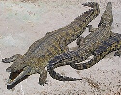

Crocodylidae (castellanizado como crocodílidos[1] o cocodrílidos[2]) es una familia de saurópsidos, arcosaurios comúnmente conocidos como cocodrilos (aunque poco usada, el DLE también acepta la grafía crocodilo).[3] Incluye a catorce especies actuales.[4] Se trata de grandes reptiles semiacuáticos que viven en las regiones tropicales de África, Asia, América y Australia. Aparecieron por primera vez durante el Eoceno, hace unos cincuenta y cinco millones de años. En sentido estricto, un cocodrilo es cualquier especie que pertenece a la familia Crocodylidae (a veces clasificada como la subfamilia Crocodylinae). No obstante, el término también se puede usar de manera más flexible para incluir todos los miembros existentes de la orden Crocodilia, es decir, los verdaderos cocodrilos, los aligatores y caimanes (familia Alligatoridae) y los gaviales (familia Gavialidae), así como los Crocodylomorpha, que incluye parientes y antepasados extintos de los cocodrilos actuales. Los cocodrilos tienden a congregarse en hábitats de agua dulce como ríos, lagos, humedales y algunas veces en agua salobre. Se alimentan principalmente de vertebrados (peces, reptiles y mamíferos), y algunas veces de invertebrados (moluscos y crustáceos), según la especie.